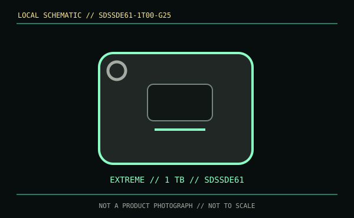

[ REMOVABLE MEDIA // MODEL-SPECIFIC RECORD ]
SanDisk Extreme Portable SSD 1 TB (SDSSDE61-1T00-G25)
This record describes the complete external SSD model SDSSDE61 at 1 TB, not a bare SSD or an enclosure. It is distinct from the Extreme PRO line (SDSSDE81) and older similarly branded revisions.

IDENTIFICATION: Confirm the printed SDSSDE61 model and full regional part number. SanDisk product names have been reused across revisions with different performance.
Format, capacity and compatibility
| Product / part ID | SanDisk Extreme Portable SSD, 1 TB, SDSSDE61-1T00-G25 |
|---|---|
| Interface | USB 3.2 Gen 2 (10 Gb/s), USB-C connector, backward compatible with supported lower-speed USB hosts. |
| Performance | Manufacturer-rated maximum up to 1,050 MB/s read and 1,000 MB/s write. Sustained rates depend on host, workload, temperature, cable and available cache. |
| NAND / endurance | Western Digital's cited retail material does not identify NAND type or provide a TBW rating for this portable SKU; no underlying controller or NAND is guessed. |
| Compatibility | Use with USB data-capable Windows or macOS computers and supported devices. The supplied USB cable/adapter and host port determine connector fit and negotiated speed; check host formatting support before use. |
| Enclosure caveat | Any ingress or drop-protection rating is conditional on the tested enclosure revision; it is not a substitute for backup or permission to connect a wet/dirty drive. This is the factory external product, not an enclosure-only listing. |
Handling and preservation
Keep ports clean and dry and safely eject before disconnecting. Preserve SKU/firmware details and use checksummed copies on at least two independent storage systems. Portable flash media can fail without warning; environmental resistance does not establish long-term unpowered retention.
Sources and standards
- SanDisk / Western Digital — Extreme Portable SSD 1 TB product pageManufacturer product details and SKU-specific configuration.
- SanDisk / Western Digital — Extreme Portable SSD data sheet (PDF)Manufacturer family specifications, interface and performance rating.
- USB-IF — USB 3.2 specifications overviewUSB interface-generation context.